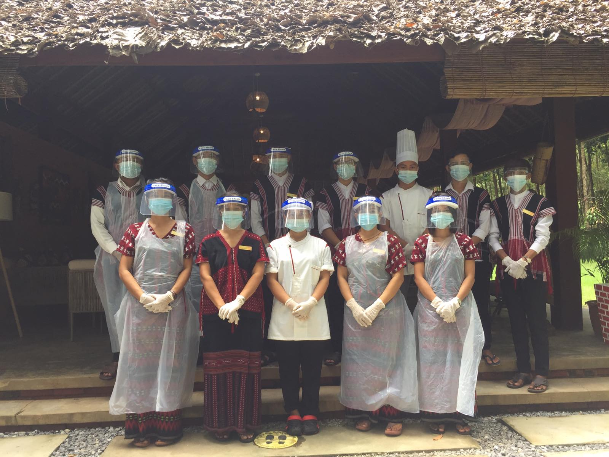

Wonder
Lands
Home
Place
Hotel
Restaurant
Contact
Hpa-An Restaurants
Chit Lay (1)
Chit Lay (2)
Oscar Restaurant
Kawkaboung Garden Restaurant
Nilar Cold Drink Shop
Shwe Man Restaurant
Sabi Thai Restaurant
Kaung Sat Restaurant
Shwe Htone Maung Café
Golden Door Restaurant
SKY(1) Restaurant
Oasis(3)KTV&
Tae Win Oasis KTV & Restaurant
24 Hour Café
Thai Village Restaurant
Thai Good Restaurant
Yi Yi Cho Restaurant
Lucky (3) Restaurant
Shwe Pyanhwal Bakery
Rain Restaurant
Larwhila Restaurant
Happiness Restaurant
My Hat Restaurant
Pann Khayay Restaurant
Shwe Nyein Chan Restaurant
Pann Kwar Nyo Café & Restaurant
Mow Moe Restaurant
Hpa-An Paradise Restaurant
Arrdees Htoo Restaurant
Kant Kaw Oo Restaurant
Bangkok Restaurant
Zame
New Life Restaurant
Maung Latt Café
Shwe Kan Paw Restaurant
Shwe Chicken Restaurant
Kar Ma Restaurant
San Ma Tu Restaurant
Hlaing Tont Tont Restaurant
Ngwe Ka Phaung Restaurant
